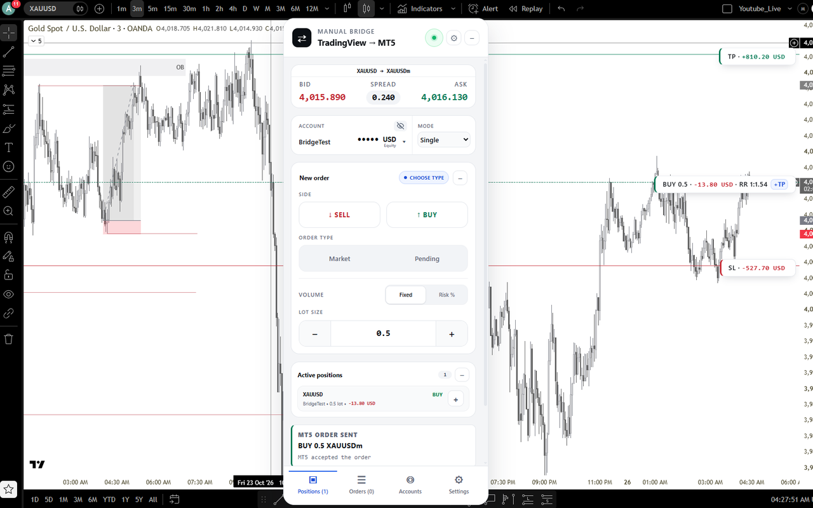
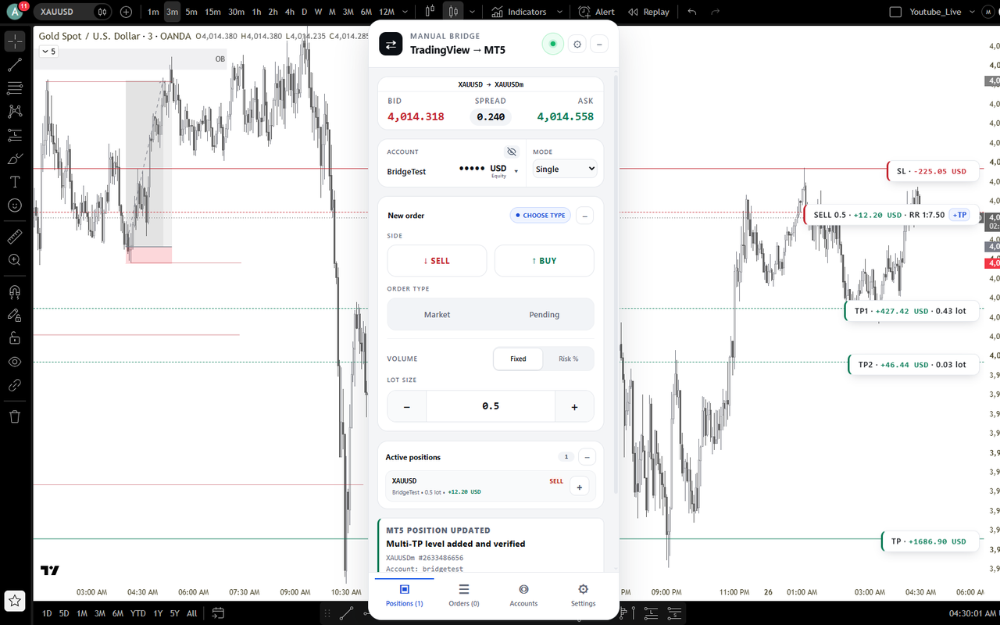
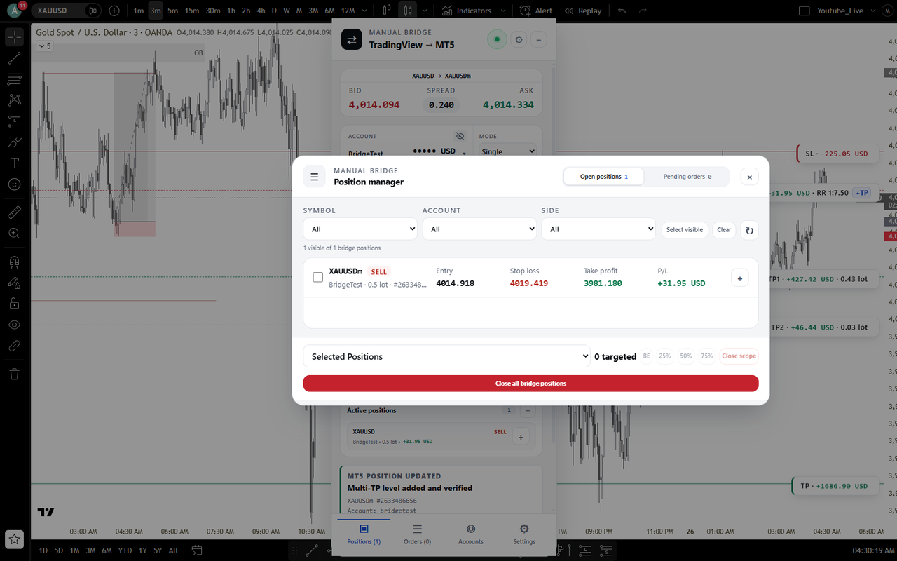
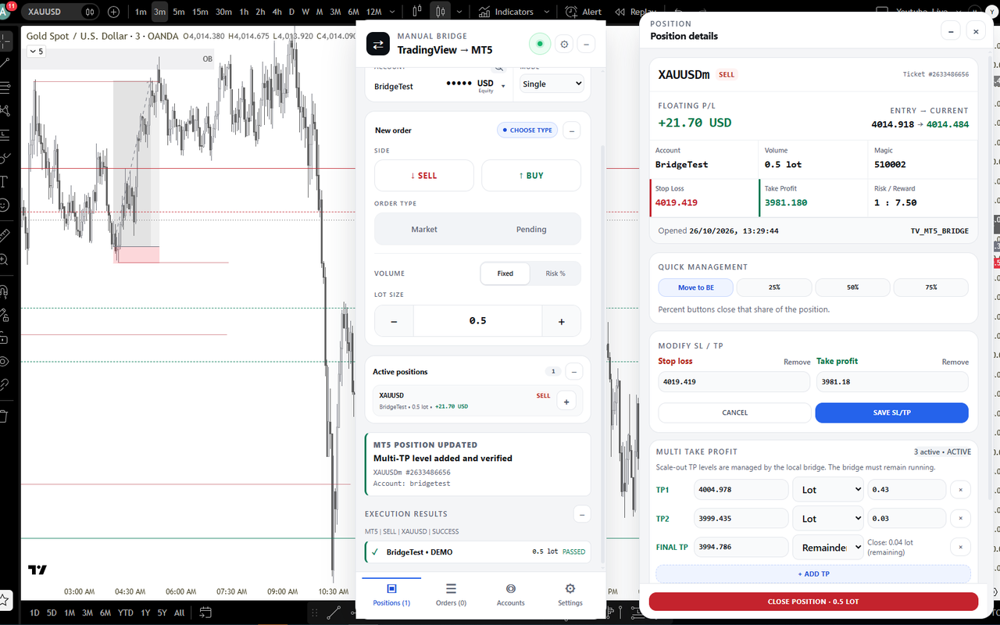
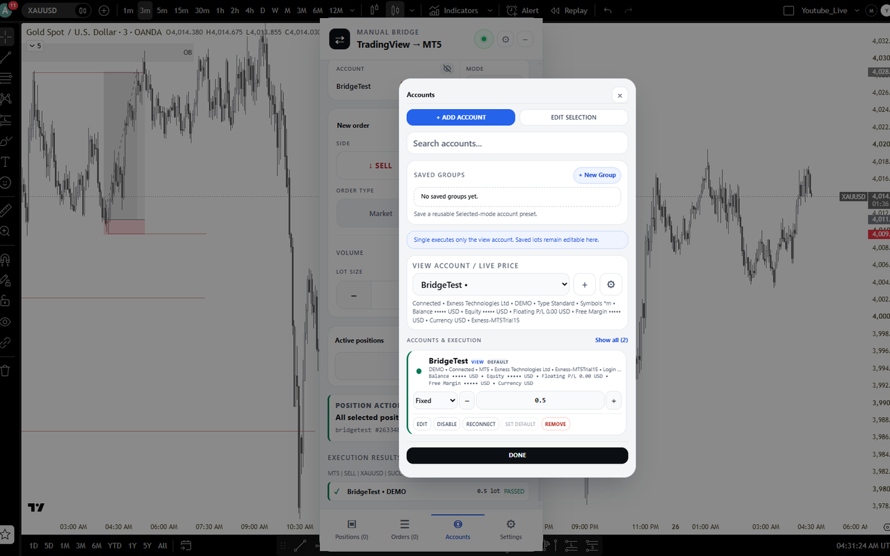

TVMT5 Bridge
Trade your MetaTrader 5 accounts straight from your TradingView chart. Everything runs on your own Windows PC.
1. Download the Bridge app
The Chrome extension needs this small Windows app to talk to MetaTrader 5.
Download for Windows Get the Chrome extension
Requires Windows 10 or 11 (64-bit), MetaTrader 5 and Google Chrome.
See it in action









2. Install
- Run
TradingViewMT5Bridge_Setup.exe. - Windows may show "Windows protected your PC" because this is a new app. Click More info, then Run anyway.
- Finish the installer. The Bridge starts by itself and shows an icon near the clock.
3. Add the Chrome extension
- Open the TVMT5 Bridge extension on the Chrome Web Store and click Add to Chrome. During the beta the page opens only for invited testers, so use the Google account your invite was sent to.
- Open a chart on tradingview.com. The panel appears on the right and pairs with the Bridge automatically.
Use TradingView in Chrome, not the TradingView desktop app. Chrome extensions do not run inside the TradingView desktop app, so the panel will not show there.
Tip: want it to feel like an app? Open your chart on tradingview.com in Chrome, click the ⋮ menu > Cast, save and share > Install page as app.... TradingView then opens in its own window with a Start menu and taskbar icon, and the extension still works.
Tip: want it to feel like an app? Open your chart on tradingview.com in Chrome, click the ⋮ menu > Cast, save and share > Install page as app.... TradingView then opens in its own window with a Start menu and taskbar icon, and the extension still works.
4. Connect your MT5 account
- Open each MetaTrader 5 terminal you want to use and log in once.
- In MT5, click Algo Trading on the toolbar so it turns green, and tick Tools > Options > Expert Advisors > Allow algorithmic trading.
- In the panel, open Accounts > Add account, enter the full path to that terminal's
terminal64.exe(for exampleC:\Program Files\MetaTrader 5\terminal64.exe), your login, server and password, then Test connection and Add account.
Start on a demo account. We recommend testing on demo first. A real (live) account can trade as soon as you add it; you can block real trading for any account at any time with the LIVE: ON switch in Accounts.
Your data stays on your PC
- Your MT5 password is typed in a protected box, sent only to the Bridge on your own PC, and saved there with Windows encryption.
- The Bridge only accepts connections from your own computer and does not send anything to us or to any other server.
- Read the full privacy policy.
Troubleshooting
- Panel says "Bridge offline": start "TradingView MT5 Bridge" (the TVMT5 Bridge app) from the Start menu, then click Retry now.
- Panel does not appear: make sure the chart is open in Chrome (or the TradingView window installed from Chrome), not the TradingView desktop app.
- "AutoTrading disabled by client": turn on Algo Trading in that MT5 terminal (step 4.2).
- "MT5 terminal not found": edit the account and enter the correct
terminal64.exepath.